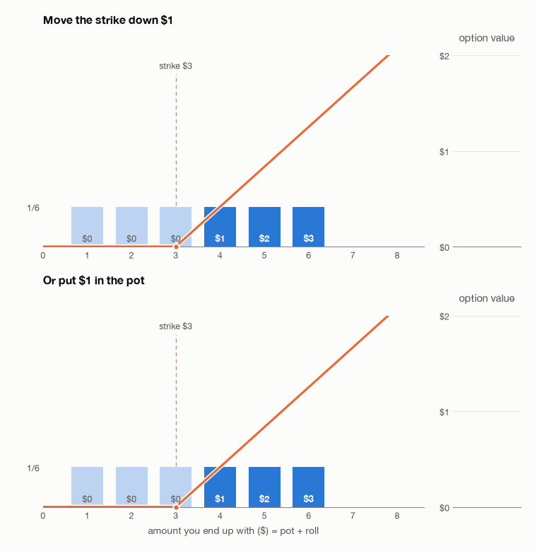
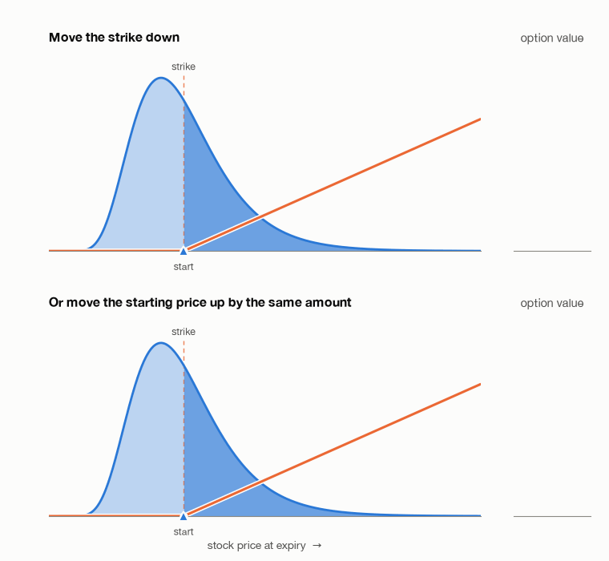

In this post I aim to give a refresher on some basic probability math and give some intuition for the lognormal distribution, which many struggle to understand.
An options contract gives you the right, but not obligation, to buy something at a specific future date at a specific price (referred to as the strike). Let’s start with a toy example. You will roll a six-sided die, after which you have the right to pay $3 and receive the number rolled. If you roll a 5, you will pay the $3, receive $5, and come out $2 ahead of where you started. If you roll a 2, you won’t pay the $3, so you will receive $0. This is well modeled by the function f(x) = max(x − 3, 0) where x is the dice roll.
How much is this contract worth ex ante? It’s worth the probability of each outcome times the payoff for that outcome summed up.
So the contract is worth $1.
Now what would the contract be worth if we dropped the strike to $2?
Now what would happen if instead of paying the difference between the dice roll and $2, you start with $1 in the pot and can pay $3 to receive the $1 plus the roll?
So in this case it is equivalent whether we move the strike down by $1 or the outcomes of the dice all up by $1.

The change in the value of the option when you start with $1 in the pot and then roll the die is called the delta. And the change in value of the option when you move the strike down is called the strike or “dual delta”. In this case we can see that the changes in value are the same size. There are two things going on here. When we move the strike, we are sliding the payoff function. When we move the starting point, we are sliding the distribution of outcomes the other way. In either case, the functions maintain their shape and size and sit in the exact same place relative to each other.
But in financial options math, the dual delta and delta aren’t equivalent. How can this be? The answer is that the expected distribution of stocks in the future is best modeled by a lognormal distribution, and you can’t just slide lognormal distributions.
Lognormal distributions are (often) the result of geometric random walks. In a geometric random walk you start at a position n, and then you move up or down 1% of n with 50/50 odds. I won’t go over why stocks follow geometric random walks right now, but it’s basically because of the efficient market hypothesis and the fluctuations of stock prices being relative to the current price of the stock. When sampling a geometric random walk, the size of the resulting distribution depends on where you start. If you start at 1, you will either end up at 0.99 or 1.01 next step. But if you start at 5, you will end up at 4.95 or 5.05, much farther from the original location.
Let’s go back to toy examples. Imagine you take a single step in a geometric random walk starting at $2 and you have the option to buy the difference between where you end up and $2.
Now imagine you start at $2.01 instead but the strike stays at $2.
Now imagine you start at $2 again but the strike moves to $1.99.
Not the same! So the delta is not the same as the strike (dual) delta. When you move the strike price, you are sliding the functions against each other. But when you move the starting point of the random walk, you are not just sliding but stretching the distribution as well. The extra cent you start with at $2.01 also goes on the random walk and creates 0.01 cents.
